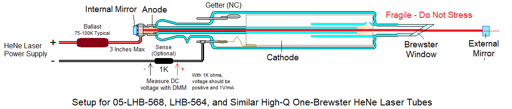
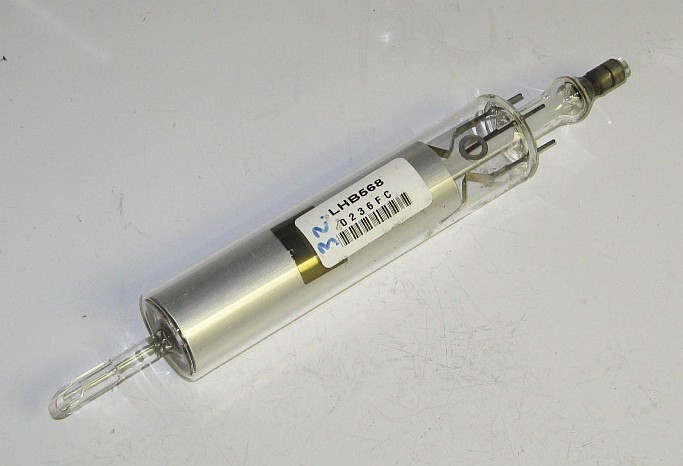
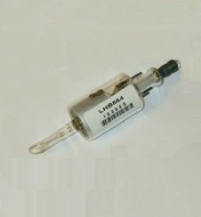
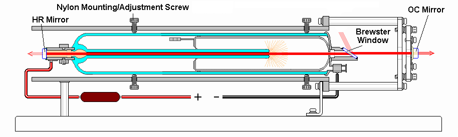
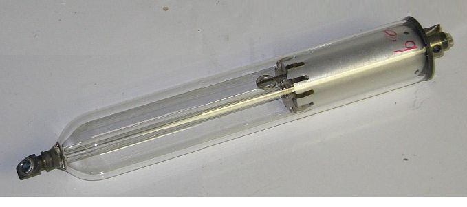
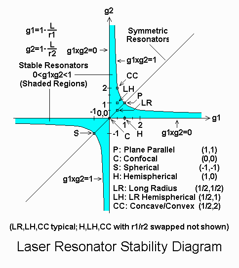
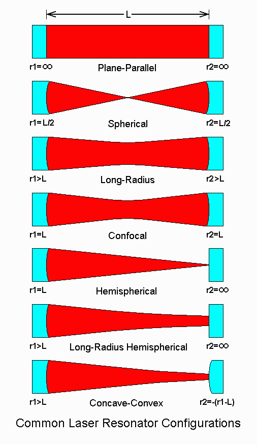
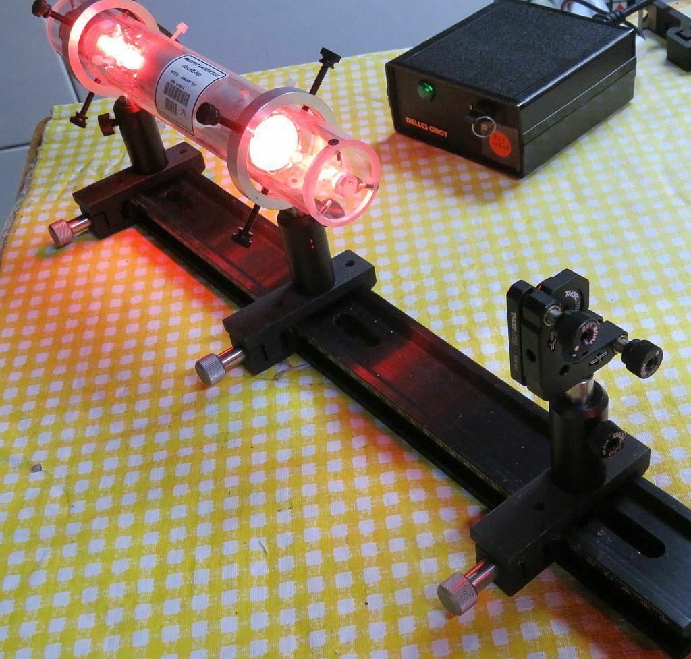
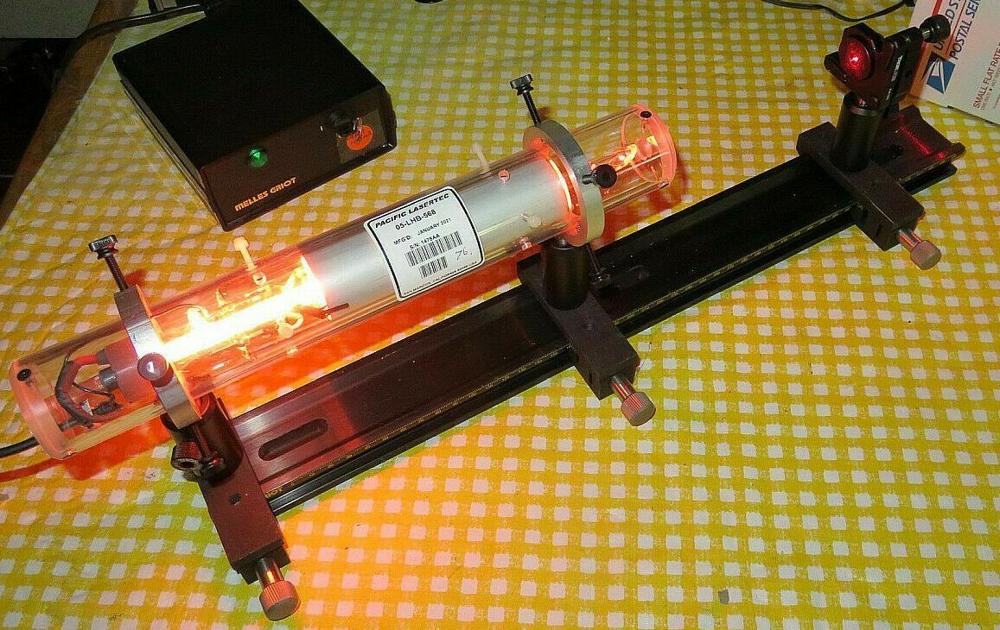
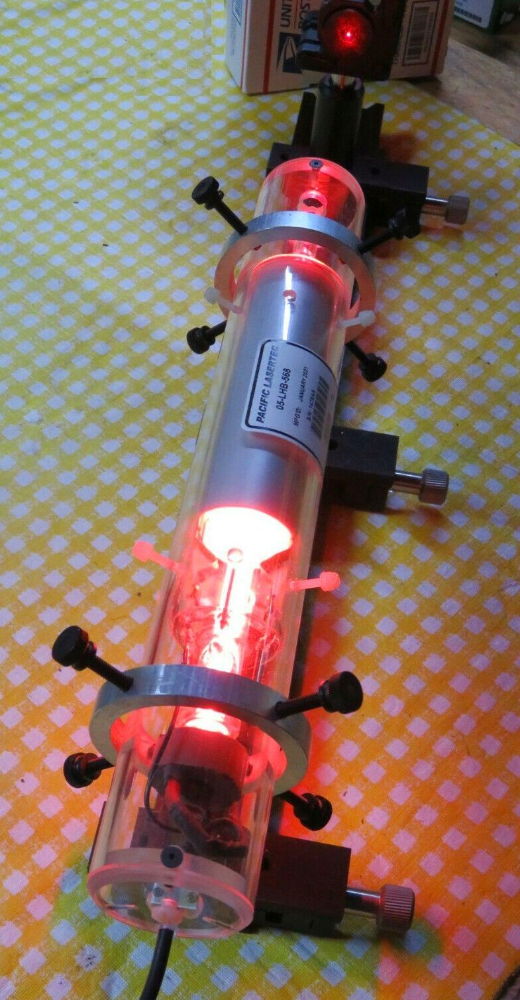

Assembly and Operating Instructions for Open Cavity HeNe Laser Kits
Version 1.00 (27-Apr-22)
UNDER CONSTRUCTION
Introduction
This document contains notes on the assembly and operation of the various
open cavity Helium-Neon (HeNe) laser kits. Rather
than having both a High Reflector (HR)
mirror and Output Coupler (OC) mirror permanantly attached,
these tubes have one or two
Brewster-angle windows or perpendicular AR-coated windows
in their place. This means
that one or both laser cavity mirrors need to be external, and that
additional optics can be added inside the cavity.
These are for the true laser geek where just powering a common internal
mirror HeNe laser tube or laser head is too mundane and BORING. ;-)
And just getting these to lase with external mirrors can be a frustrating
experience for the novice - but a truly rewarding one when sucessful.
Short of fabricating the laser tube itself (which is orders of magnitude
more difficult), this is the closest one can reasonably come to actually
building a HeNe laser from scratch.
Melles Griot / Pacific Lasertec High-Q One-Brewster HeNe Laser Tubes
This section applies to all tubes of similar construction including the LHR-563,
LHB-564, LHB-568, and LHB-569, as well as the very rare and challenging
LGB-563 with a green (544 nm) internal mirror.
IMPORTANT: The one or two Brewster and perpendicular window
HeNe laser tubes provided in these kits are more fragile than
the already fragile internal mirror tubes. But in particular, those
called "High-Q" where one end is all glass need to be treated with special
care.
- The Brewster window is attached using what is called "optical
contacting". This means there is really nothing holding it place
beyond molecular adhesion
and the pressure of the outside air. ;( :) Overly vigorous cleaning or
a minor whack against a hard surface can pop it right
off, which needless to say, would not be good. The benefit of optical
contacting is that the joint has zero stress and therefore
doesn't distort the window. This is what enables high-Q tubes to have
many WATTS of intra-cavity circulating power with matched HR mirrors.
- Unlike most modern internal mirror HeNe laser tubes which use one of
the mirror stems for the cathode connection, the
negative wiring on these is via a pair feed-through posts
which should be treated gently when installing the slip-on connector(s).
- As with all HeNe laser tubes, polarity is critical. The positive
(usually fat red wire) from the HeNe laser power supplly goes to the
metal mirror stem. The negative goes to one or both of the pins
attached internally to the cathode ONLY. Failure to adhere to this will
totally ruin the tube in a few minutes of operation even though it may
appear to light and lase normally.
- The operating current for the long LHB-56x tubes is spec'd at 6.5 mA
but 4 mA to 6.5 mA is acceptable as long as the dicharge is stable.
Lower current results in less heat dissipation in the ballast and tube
with only a small reduction
in available output power. The operating current for the LHB-564 is spec'd
at 3 mA ±0.2 mA but 3.5 mA is acceptable (and is probably what
the power supply in the kits provides). The diagram below shows a low
(shocking) risk way of measuring the tube current.
Failure due to screwups in any of these is not covered under the warranty.



Where a power supply with female Alden cable is included, a mating male Alden
cable will be provided. It may even already be wired to the required
ballast and tube clips. Generally, the red fat HV wiring needs to be
well insulated but the black (fat or thin) wiring is near or at
ground potential.
Melles Griot / Pacific Lasertec Frit-Sealed One-Brewster HeNe Laser Tube


Serving Suggestion: Melles Griot/Pacific Lasertec 05-LHB-570 Tube in Test Fixture and Photo of Similar Tube. The High-Q tubes can be mounted
in a similar way.
For these tubes,
the B-window may be at the anode or cathode-end of the tube. In the diagram,
it is at the cathode-end while in the photo it is at the anode-end. Power
must always be wired with respect to the anode and cathode, NOT where the
window is located! However, that will influence how likely it is to have
a shocking experience while messing around near the B-window. :( ;-)
Aligning an External Mirror
With no external mirror, it's just a really funky neon sign. ;-) The build
a laser, an external HR or OC mirror is needed and it must be aligned so that
the cavity is stable. (Other optics like cat's eye reflectors, roof prisms,
or cube corners can be used with some lasers in place of a mirror, but with
a HeNe, the gain is so low that these would be quite challenging to get to
work.) There are two primary requirements for lasing to occur: (1) the
cavity geometry must be stable and (2) the round trip gain must be greater
than 1.
For the first requirement to be met the cavity formed by the mirror inside the
laser tube and the external mirror be stable. It's possible to set up
unstable cavities that lase but that is generally not practical or useful
with HeNe lasers. However, note that although these kits do not include
any convex mirrors, HeNe lasers can be built with a concave and convex
mirror providing some specific advantages. The internal mirrors in all these
tubes have a 60 cm Radius of Curvature (RoC) unless noted otherwise.
All the mirrors included in the kits will form a stable cavity at some
range of distances from the internal mirror that is determined
by the RoC of the external mirror. The cavity will be stable if:
- The mirror spacing is less than the minimum(RoC1,RoC2).
- The mirror spacing is greater than the maximum(RoC1,RoC2) AND less than
RoC1+RoC2.
This diagram below shows the stable area as a function of the dimensionless
quantities g1 and g2 which are equal to L/r1 and L/r2, resectively. RoC1 = r1
and RoC2 = r2. While lasing is generally not possible precisely long
either axis of the edge of the curves, interesting things occur
at the origin. ;-)


So for example with the 60 cm RoC internal mirror and a 30 cm RoC external
mirror, the the cavity will be stable up to 30 cm and from 60 cm to 90 cm.
In practice, lasing near the limits will be difficult or impossible.
With a planar external mirror (RoC = infinity), the range will be from
close to the tube window to 60 cm. (Note that to be really pricise, the
effective optical distance within the window must also be taken into
account, but that can generally be ignored.)
The single pass gain for the LHB-568, LHB-570, and similar tubes is around
3 percent; for the LHB-564 it is 1 to 2 percent. The mirror adds loss based
on its reflectivity, cleanliness, and imperfections. There are also losses
due to scatter from both the inner and outer surfaces of the Brewster
or perpendicular window. And since the bore is not infinitely large,
the tail of the intracavity beam brushes the side-wall called
resulting in "diffraction losses, but for these tubes with wide bores,
they are minimal.
As a first test, the mirror labeled "LO1160 1m OC" should be easiest to
use because it has a high reflectance (99.5%) yet will produce a full
power beam (>5 mW for the LHB-568 or LHB-570 and >1 mW for the LHB-564),
and it will lase from next to the window to up to 60 cm from the internal HR.
Mounting the Tube and Mirror



Pacific Lasertec 05-LHB-568 One-Brewster HeNe Laser Tube on Rail with External Mirror in Kinematic Mount
The tube is installed in a custom Plexiglas enclosure that protects the
tube from humans and protects humans from shocking experiences due toh
the high voltage. ;-)
The "4-screw ring mounts facilitates the adjustment of the alignment of the
tube with respect to the rail and mirror.
Optics Cleaning
With regards to optics cleaning, the best approach is to never have to
do it, especially the mirror.
- Mirror: NEVER touch the surface of the mirror with your grubby
fingers. ONLY clean it if it is absolutely necessary, and then only used
the "Drop and Drag" method with PURE solvents. There are many tutorials
available on-line for this. Normally, mirror cleaning is not needed.
- Perpendicular Window: These are AR-coated and while not quite as
fragile as the mirror coating, minimize cleaning as much as possible.
The "Drop and Drag" methose is best.
- Brewster Window: These are made of fused silica and quite tough.
In fact, while a true optics aficionado will turn up their nose at what I
am about to recommend, using NEW unused Q-tips (cotton swabs) to gently
wipe off the window, especially once lasing has been achieved, will
eventually get the B-windows as clean as possible. Before lasing, use
a laser pointer to inspect for scatter off the windows. The goal is
for the scatter off the outside surface to be similar or less than the scatter
off the inside surface.
Alignment Methods
There are a semi-infinite number of ways of aligning an open cavity laser.
Here are three that are effective for the one-Brewster or one-Window tubes:
These all assume that the window and mirror are clean enough for lasing to
occur and that the distance between the mirrors is well within the range
for a stable cavity.
- Exhaustive search: Where the external mirror is on a adjustable
spring-loaded kinematic mount like a Thorlams KM100, simply moving it
through all possible angles in a systematic way will be sufficient to
achieve lasing quickly.
- Set up the one-window tube and external mirror so they are in-line.
This can be done safely by putting something in between them like a
piece of tape that would prevent lasing and then sighting through the
mirror so the bore light is centered in the mirror. WARNING: Don't
omit the "lasing spoiler". A flash of 5 mW laser light can be painful!
- Place a white card beyond the external mirror to act as a screen
so a flash of laser light will be obvious.
- Remove the spoiler and adjust both knobs of the mirror mount so it is
very obviously angled too far in one direction.
- While incrementally rotating the knob for one axis, use a stick or
something similar to lever the other axis so it passes through and
beyond the perpendicular angle. Go really slooooowly. With care
as this is done there will be a momentary flash of coherent light on
the screen. Then without moving the first knob, the one with the lever
can be adjusted to maintain lasing. Then both can be tweaked to achieve
perfection.
- Reflected bore light: The bright glow discharge inside the bore
can be used like a pointer of light to reflect from the mirror.
As far as a few inches away, there will be a very visible brighter
area centered on the bore.
- Cut a hole in a piece of opaque carboard or something similar which
is white on one side and carefully slip it over the Brewster or
window stem to act as a screen. This is particularly critical where
the window is at the glass-end of the tube so that no bore light
gets through.
- Line up the tube and external mirror so that the spot from the glow is
centered on the mirror. The best distance for the mirror is a few
inches from the window subject to the constraint that the cavity is
stable there. A further distance will result in more precise
adjustment but the spot will be fainter there.
- Use the adjustments on the mirror mount to center the reflection
of that spot back on the window while watching for any sign of lasing.
- With a bit of luck and skill, as the optimal alignment is approached there
will be a flash of red light superimposed on the red/orange "salmon"
glow from the tube.
- Fine tune the alignment while optimizing the centering of the beam at the
mirror by observing the scatter on the mirror surface.
- Alignment laser: A separate low power laser like red
HeNe, or even a green pointer, can be used. (Red pointers usually have
somewhat crappy beam large beams.) But this will require that
the Brewster or Window tube and alignment laser be rigidly
mounted in-line with adjustments to aim the alignment laser. Then
the mirror will be added. If commercial opto-mechanical hardware
is available, this is best done on a rail.
- Set up the Brewster or Window tube on a pair of 3-screw or
preferably 4-screw ring mounts so its centering and angle can be
easily adjusted. Adjust it to be level and centered.
- Set up the alignment laser to shoot its beam directly into the
Brewster or perpendicular window from a distance of 12-15 inches.
- Since there is no mirror to interfere with the beam and these tubes
have wide bores, it is easy or at least straightforward to
align the two lasers so that the alignment beam passes cleanly through
the bore of the window tube and reflects directly back to the
alignment laser from its internal mirror. Putting a white card
with a ~1 mm hole in it on the front of the alignment laser can
aid in this alignment.
- When that has been achieved, the external mirror can be added between
the window tube and alignment laser and adjusted so that the reflection of
the alignment laser from it goes directly back to the alignment laser's
aperture. By simple geometry, when that occurs, the mirror is also
aligned with the window tube and lasing should occur.